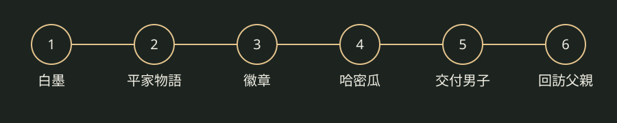

SAMURAI'S DESTINY · FIELD NOTES
把握相遇，
別錯過下一份回禮。
從白墨到橙色首飾：把取得、交換與回訪排成一條可追蹤的路線。
繁體中文PS4 Remaster來源文字核對 · 未實機驗證
01 / 目前走到哪裡？
這是本站依事件劃分的檢查點，不是官方章名。先在遊戲完成事件，再更新本機筆記。
現在先做
前進前確認
ONE THREAD, SIX STEPS
02 / 送禮交換鏈
按路線順序記錄已在遊戲中完成的動作。回禮由社群來源記載，並非本站實機保證；角色若不在場，請勿標記完成。
03 / 本機持有物
只追蹤這條路線。數量會隨已確認的交換扣除；不是遊戲內的完整背包。
04 / 道具上下游
點選步驟或背包中的道具名稱，查看取得與後續用途。
尚未選擇道具。
其他武器、防具、全道具資料：待研究。
05 / 交換關聯示意

06 / 版本筆記
來源：CAPCOM 官方版本介紹。完整操作、頭目招式與逐招示範待研究。
07 / 下一段旅途
十章主線、同伴分歧、全收集、小遊戲、獎盃與通關後內容尚未完成。遊玩時間造成的道具變化、連續送禮組合與首次贈禮特例尚未匯入正式資料。
CAPCOM 官方十兵衛介紹影片 ↗來自英文官網的 Remaster 角色宣傳影片；僅作介紹，未核對逐段時間碼，不當作逐關示範；不自動播放。